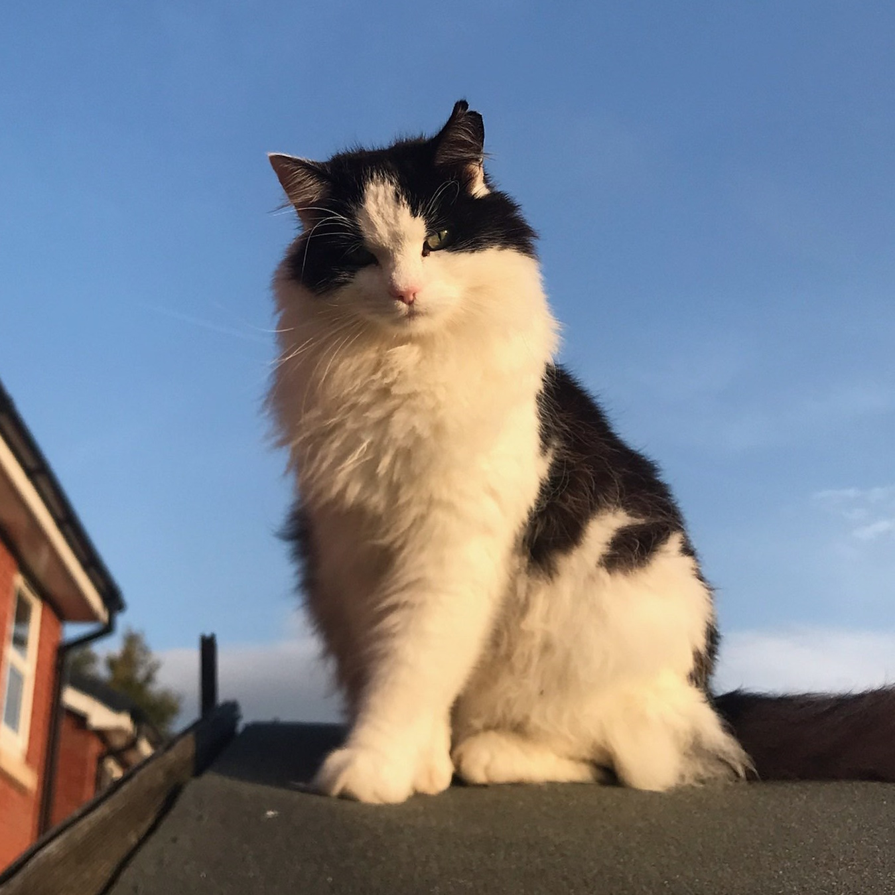
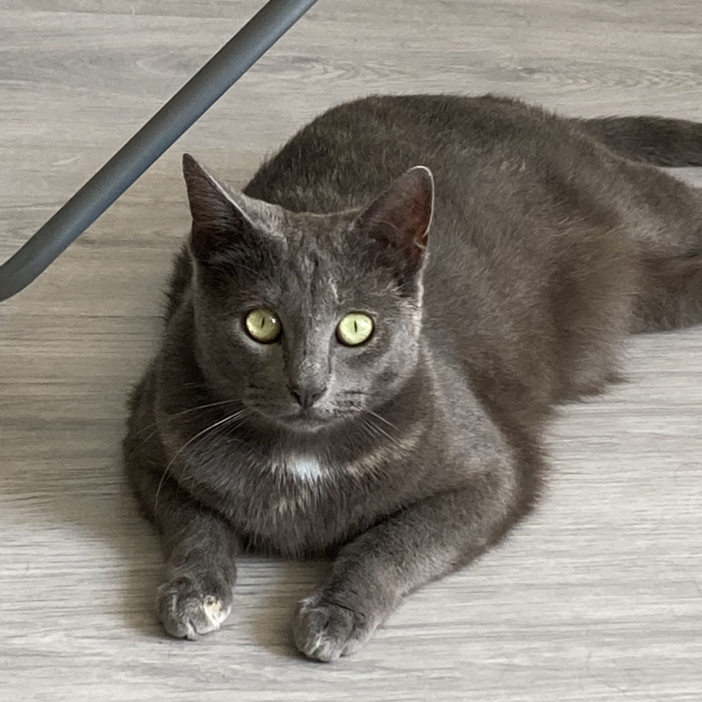

Extra's
Hier zijn nog extra katten die ik leuk vind, maar niet van mij zijn.
Oreo
Oreo is een zwart en wit gekleurde kat met veel vacht. Hij is een mannelijke kat en is vaak buiten. Wanneer hij wel thuis is, vraagt hij meestal om eten of slaapt de hele dag. Hij kan wel eigenwijs zijn, maar hij vindt aandacht wel fijn.
Bella, Jills, Marley en James
Mijn zus Angela heeft vier katten en ik vind dat zij een plek verdienen op deze website, al zijn het niet mijn katten.
Bella

Bella is de oudste kat van mijn zus en haar eerste kat. Bella is een mannetje, maar door verwarring werd er gedacht dat hij een vrouwtje was en dus Bella werd genoemd.
Jills

Jills is de 2de* kat die mijn zus heeft en is een vrouwtje.
Ze is heel lief en vindt het heel fijn om aandacht te krijgen.
*Ze is de 2de kat die zij tegenwoordig heeft. Ze heeft katten voor Jills gehad.
Marley
Marley is de nieuwste en jongste kat die mijn zus heeft. Het is een meisje en ze bijt graag, maar dan uit liefde. Ze vindt aandacht heel fijn, maar is wel gauw bang.
James

James is een van de katten waarvan ik eigenlijk niet veel weet. Hij is zwaar, maar ziet er niet dik uit. Als hij miauwt dan is dat in een hoge toon en meestal slaapt hij of kijkt hij naar buiten.